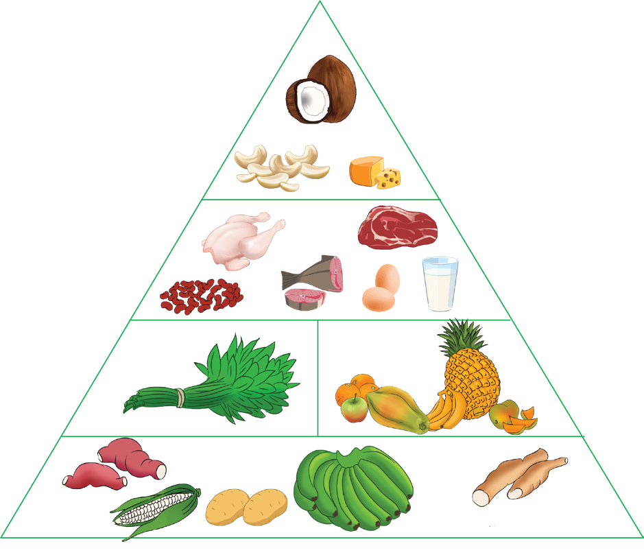

19
Student’s Book - Form Two

Biology for Secondary Schools
body whose immune system is already weak. Sick people are supposed to increase the intake of fruits, vegetables, and water. Fruits provide vitamins that are required to fight diseases.
Vegetables provide essential minerals for the proper functioning of many body systems. Water replaces the amount of water lost during sickness for example through diarrhoea or vomiting.
It is advisable to use the food guide pyramid in determining what to eat.
The food guide pyramid is a chart showing the recommended amounts of variety of foods that dieticians consider as healthy for eating. Figure 1.8 shows an example of a food guide pyramid.
It is not a fixed rule of what to eat each day, but just a general guide that helps to choose the right healthy diet. It helps an individual to eat better every day. The base constitutes foods that are required in larger amounts while the apex constitutes foods that need to be taken in lesser amounts. The food guide pyramid is not universal for all groups of people, it depends on the needs and health status of a person. For example, a diabetic person should not consume a lot of carbohydrates as indicated in the pyramid. Similarly, the elderly require small amounts of carbohydrates but more proteins and vitamins.

Sources of lipids (For example: coconut, cashewnut, and butter)
Sources of proteins (For example: chicken beef, fish, egg, milk, and beans)
Sources of vitamins and minerals
(For example: fruits and vegetables)
Sources of carbohydrates (For example: sweet potato, maize, banana, and cassava)
Figure 1.8: Food guide pyramid
08/04/2026 10:18:12